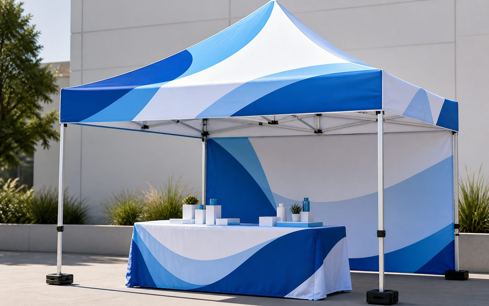

Markets
Vendor Booths
Use a printed canopy and table cover to make your booth look finished before people walk up.
Quote CanopiesPrint & Displays
Printed pop-up tents and outdoor booth displays for markets, festivals, field events, school events, recruiting tables, and branded sales setups, with design and proofing help through Say It.
Serving Tucson, Phoenix, Arizona, and nationwide business display orders.
Quick Fit
A custom canopy tent gives your table shade, structure, and a branded roofline people can find from across a market or event.
Markets
Use a printed canopy and table cover to make your booth look finished before people walk up.
Quote CanopiesSchools
Create a clear home base for registrations, fundraisers, athletics, open houses, or campus events.
Get Quote HelpPromotions
Bring a professional branded setup to demos, pop-ups, festivals, car lots, and community events.
Start My Quote
Before Ordering
Tell us where the tent will be used, whether it is indoor or outdoor, when you need it, and what pieces you want printed. We will help with the roof, valance, wall, and table layout before production.
How Say It Helps
Step 1
Share the event, location, deadline, tent size, and whether the booth needs walls, weights, or matching pieces.
Step 2
We help compare top, valance, wall, and table-cover options so you do not overbuy.
Step 3
You review the layout before production so the final tent matches your brand and reads clearly outdoors.
Step 4
Production and delivery are planned around your event deadline, location, and setup needs.
Canopy Tent FAQ
These are the questions most businesses should answer before requesting a custom canopy tent quote.
Most event booths start with a 10x10 pop-up canopy. The right size depends on the booth space, table setup, local event rules, and how much product or signage you need underneath.
Common print areas include the canopy top, valance, back wall, side wall, and matching table cover. Start with the parts people will see first from the aisle or walkway.
Yes. Send your logo, brand colors, website, or existing print files. We can help place the artwork so the tent is readable from a distance.
Yes. Say It helps Tucson, Phoenix, Arizona, and nationwide businesses quote canopy tents, prepare artwork, review proofs, and order around event deadlines.
Next Step
Send the event date, tent size, logo files, and which pieces you want printed. We will help with the cleanest quote path.